My
Work
Dez projetos de UX design e research, feitos ao longo de quinze anos para clientes de e-commerce, saúde, educação, mineração e venture capital.
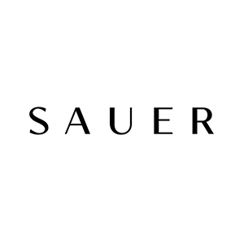
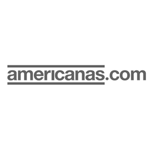
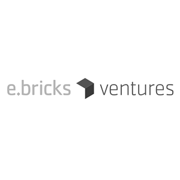
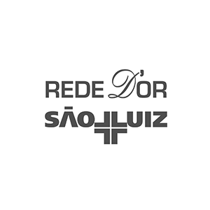
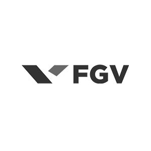
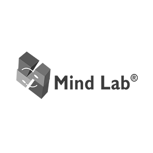
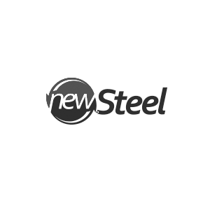
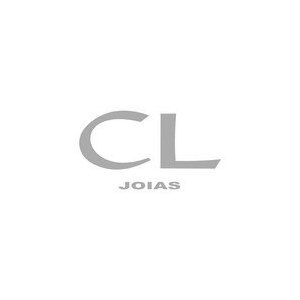
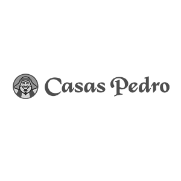
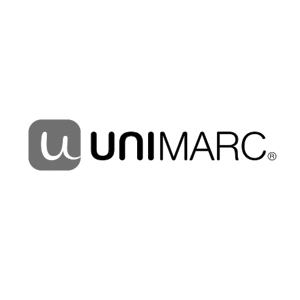
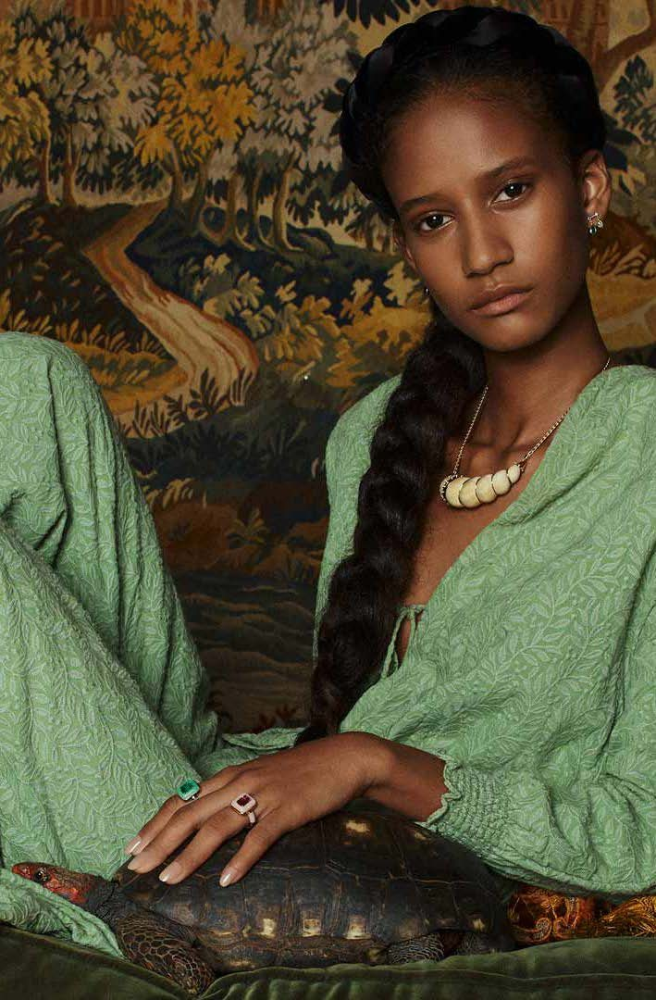
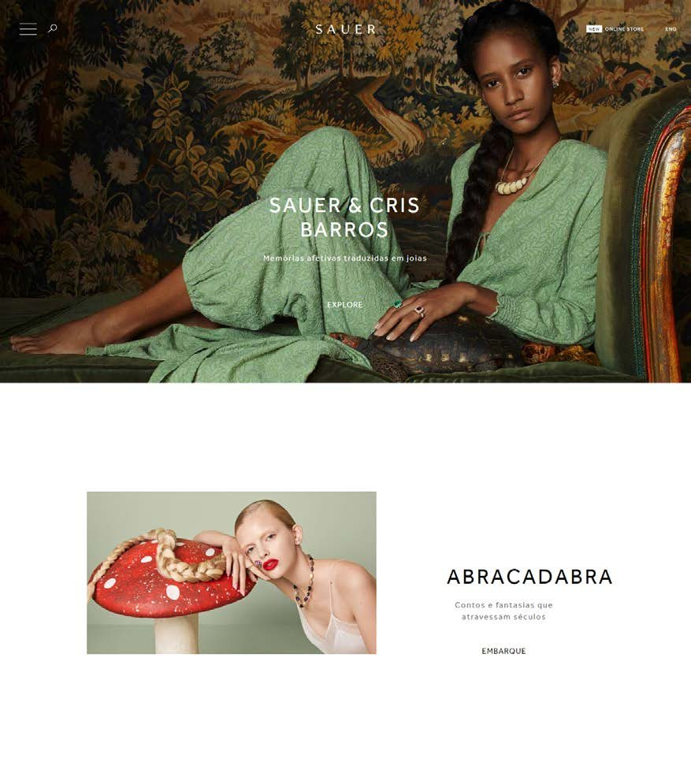
Quem é a SAUER e qual era o desafio?
O desafio
A Amsterdam Sauer hoje se chama somente SAUER: após passar por um processo de rebranding, decidiram retornar ao seu nome de origem. É também uma das joalherias brasileiras de maior reconhecimento internacional pelo seu estilo conceitual de alta moda.
A SAUER vivia a questão inversa da CL Joias — possui um posicionamento extremamente conceitual, e isso estrategicamente inibia a marca de se posicionar de forma mais comercial. Nosso desafio foi construir um e-commerce que permitisse à marca expor um conjunto de joias selecionadas sem perder a aura mística dos seus conceitos arrojados. Tratamos todas as peças disponíveis como uma exposição de curadoria, selecionada pela Stephanie Wenk em pessoa.
Qual foi o meu trabalho
Nesse projeto estive envolvido como UX Designer e também como Estrategista. Construí o conceito, a forma com que iríamos nos posicionar e a linguagem que iríamos abordar. Determinei a tecnologia que utilizaríamos — nesse caso, Shopify — e realizei toda a integração e desenvolvimento da loja. Tive o suporte de mais dois profissionais de UI e Dev, mas no final esse foi um projeto 90% solo.
Competências
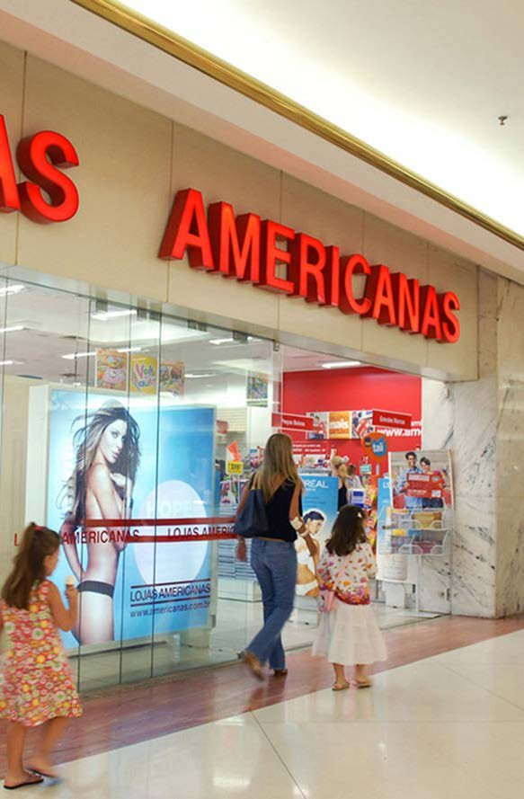
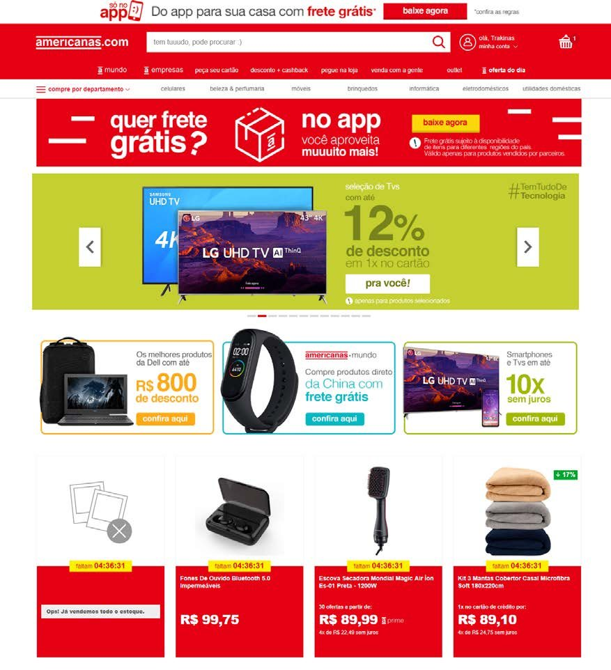
Quem é a Americanas.com e qual era o desafio?
O desafio
A Americanas.com é a versão digital da loja física Americanas. Sendo o maior comércio eletrônico da América Latina, a empresa faz parte do conglomerado do grupo B2W.
Com esse título, a Americanas.com não poderia se deixar ultrapassar por outros gigantes do comércio eletrônico. Para isso, o time de UX precisava contar com uma visão externa, analisando sua interface, navegabilidade e outros aspectos do comportamento de compra do usuário.
Qual foi o meu trabalho
Geralmente o meu trabalho seria desenhar soluções de interface para o cliente, mas nesse caso a Americanas.com já possuía uma grande equipe de usabilidade. A real necessidade era trazer definições que embasassem melhor as decisões de interface. Por isso implementei uma rotina diária de análises na interface do cliente e de seus concorrentes, baseadas em heurísticas desenvolvidas pelo Baymard Institute.
Acumulei mais de 1500 horas de estudos e análises, que resultaram em aproximadamente 900 páginas de sugestões de melhorias a serem implementadas.
Competências
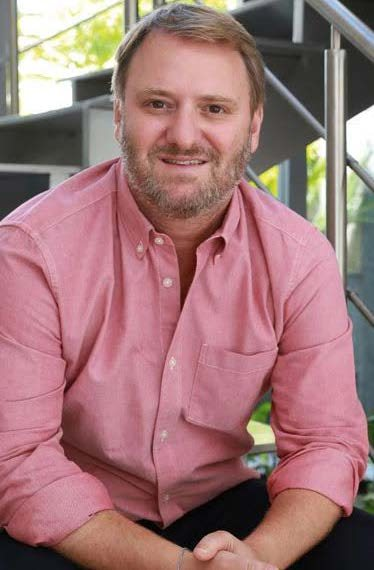
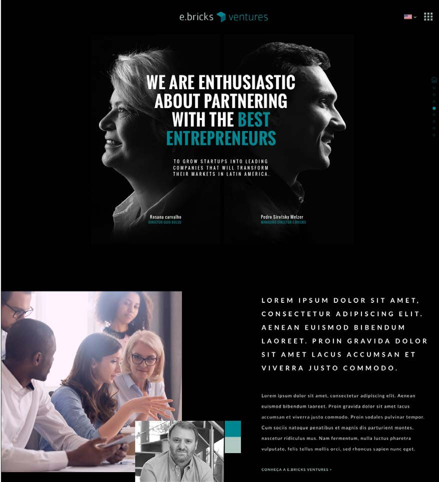
Quem é a e-Bricks Ventures e qual era o desafio?
O desafio
Talvez você conheça a e-Bricks Ventures, ou algum dos seus similares como a Sequoia Capital ou a Monashees. Estamos falando de uma venture capital: empresas especializadas em investir em outras empresas que estão em fase de crescimento.
Nosso desafio era desenvolver um site que traduzisse a real essência da e-Bricks. Por ser uma venture voltada para o mercado nacional, ela possui particularidades bem diferentes da Monashees. Seu formato de trabalho é extremamente racional e tem foco em empresas que trazem soluções para as dificuldades do mercado brasileiro, como logística de entrega.
Qual foi o meu trabalho
Mais um trabalho realizado em parceria com Lucas Ribeiro, estrategista e copywriter da People Interactive. Lucas me apresentou a metodologia AIDA e, através dessa lógica, estruturei a forma com que o novo site da e-Bricks iria se apresentar para o público: de maneira realista, firme, robusta e inovadora. É um site com navegação diferente de tudo o que você já viu.
Competências
CréditosParceria com Lucas Ribeiro (estratégia e copywriting)
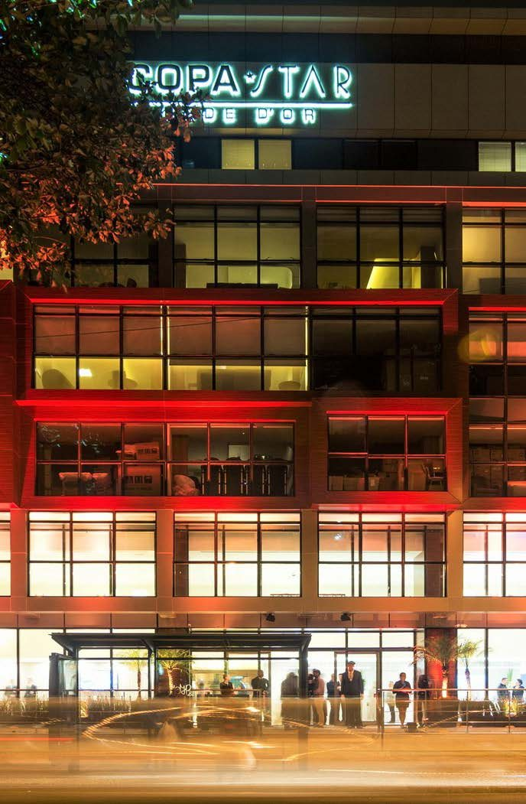
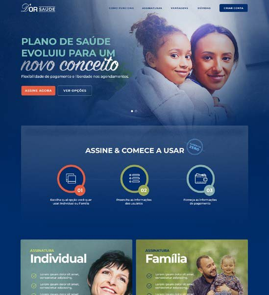
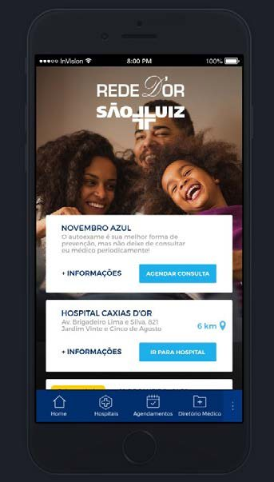
Quem é a Rede D’Or e qual era o desafio?
O desafio
Uma das maiores, senão a maior rede de hospitais particulares do Brasil, atuando em todas as regiões do país. A Rede D’Or é um cliente diferenciado, por possuir demandas constantes de melhorias nos seus sistemas e estar sempre buscando abrir novas frentes de negócio e novas formas de atender as demandas da população brasileira na área de saúde.
Qual foi o meu trabalho
Durante quase 2 anos recebi demandas da área de negócios e desenvolvi diversos projetos. Poderia citar o aplicativo de atendimento digital, usado para organizar agendamentos, solicitar atendimento emergencial e organizar a ficha médica dos pacientes, empoderando o usuário. Também desenvolvemos novos negócios, abrindo uma frente de planos de saúde de mais fácil acesso a pessoas de baixa renda.
Entre outras melhorias, desenvolvemos as rotinas do hospital modelo situado no Rio de Janeiro, o CopaStar — o primeiro hospital a não utilizar papel, ou seja, tudo no hospital é altamente tecnológico e digital.
Competências
CréditosUI desenvolvida por Ana Romaguera
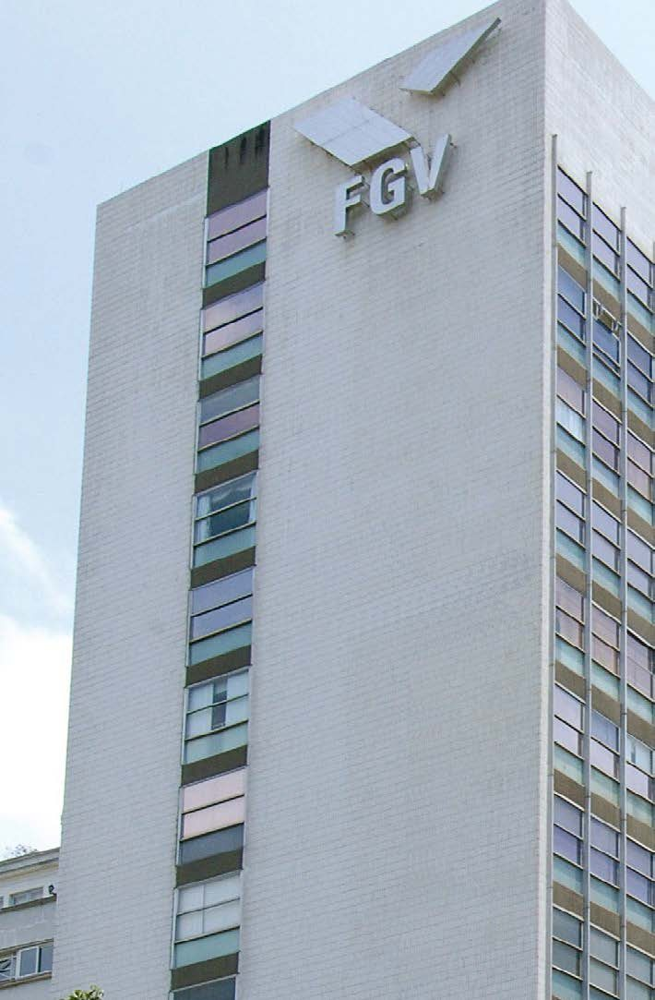
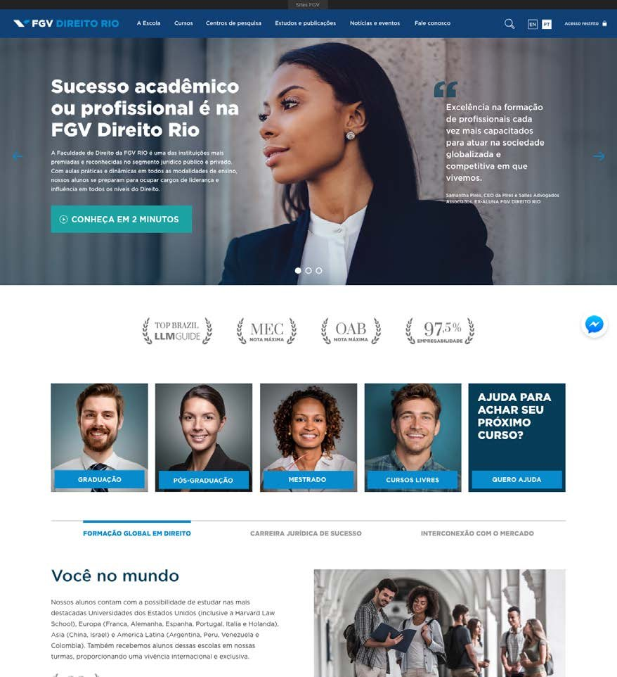
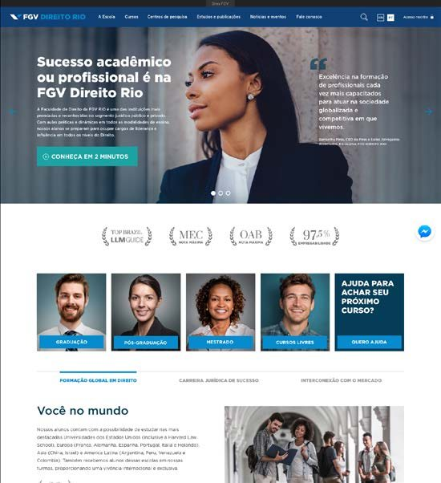
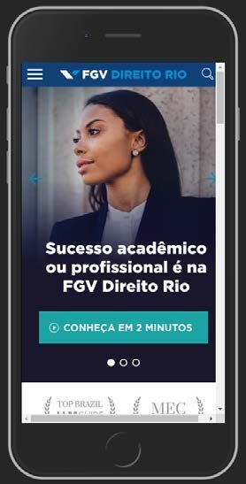
Quem é a FGV e qual era o desafio?
O desafio
FGV é a sigla para Fundação Getulio Vargas, uma das mais bem conceituadas instituições de ensino do Brasil. Também responsável por diversas análises estatísticas, de certa forma a FGV é o braço de inteligência que o governo brasileiro assumiu para auxiliar no desenvolvimento do país.
A FGV seguia o mesmo modelo de negócio que a Rede D’Or: é um trabalho constante, on going, sempre projetando novos sites, novos sistemas e novos modelos de negócio. A minha participação nesse cliente se dá de forma pontual.
Qual foi o meu trabalho
A FGV preza por protótipos de alta fidelidade na execução de cada projeto, e eu sou especialista em Axure, uma ferramenta com capacidade quase ilimitada quando se trata de produzir protótipos extremamente funcionais. Meus protótipos nessa ferramenta são tão reais que diversos clientes acreditaram que o projeto já estava pronto e desenvolvido quando foi apresentado pela primeira vez.
Competências
CréditosUI desenvolvida por Ana Romaguera
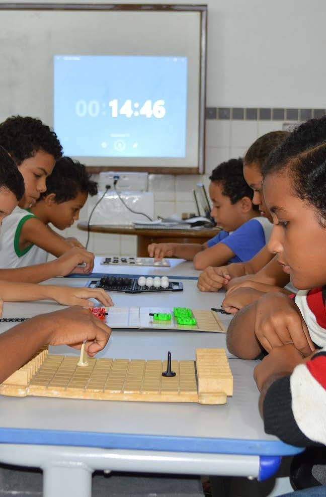
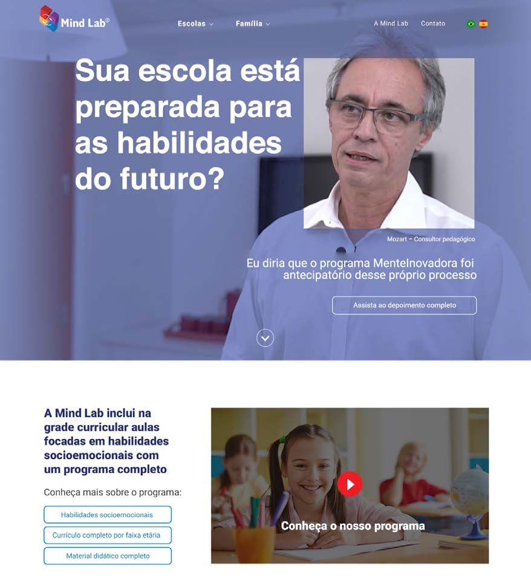
Quem é a Mind Lab e qual era o desafio?
O desafio
A Mind Lab é uma startup com foco educacional, projetada para o mercado através da Monashees. Seu objetivo é trazer para a educação convencional novos modelos de ensino, mais práticos e funcionais para o dia a dia do indivíduo. Resumidamente: revolucionar a educação.
A exemplo do que ocorreu com a e-Bricks Ventures, a Mind Lab também necessitava de um “cartão de visitas” que mostrasse realmente a sua essência. Nosso desafio foi projetar um site fora do convencional, que realmente trabalhasse a favor dos objetivos da Mind Lab.
Qual foi o meu trabalho
Mais uma vez, esse foi um cliente que gostava de ver protótipos funcionais para entender melhor a experiência que estávamos propondo. Por isso me envolvi desenhando protótipos de algumas partes do site e tornando essas partes navegáveis. Fora isso, a maior parte do meu trabalho foi consultiva: tenho conhecimento consolidado sobre sistemas mobile como iOS e Material, e por isso auxiliei o time de Design a adequar seus layouts aos padrões exigidos para o mercado mobile.
Competências
CréditosUI desenvolvida por Felipe Miranda
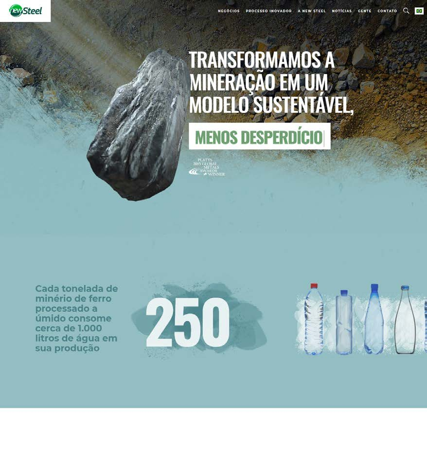
Quem é a NewSteel e qual era o desafio?
O desafio
A NewSteel é uma empresa de tecnologia em mineração, mundialmente reconhecida por ter desenvolvido o primeiro e mais eficiente sistema de lavagem de resíduos a seco com alto retorno. Hoje a NewSteel pertence à Vale, tendo sido adquirida por 500 milhões de dólares.
Inovação, alta tecnologia e alto desempenho no processamento de minérios: tudo isso precisava ser traduzido em um site que apresentasse a NewSteel para o mundo. Mais uma vez o desafio foi sair do convencional e criar muito mais do que só um site — criamos uma narrativa, contamos a história da NewSteel somada à história do processo revolucionário que eles desenvolveram.
Qual foi o meu trabalho
Meu papel nesse projeto foi pontual: era necessário alguém com olhar extremamente analítico para construir a taxonomia das informações. Depois de muito estudo, desenhei possibilidades de organização e estruturação para o menu do site.
Competências
CréditosUI desenvolvida por Ana Romaguera
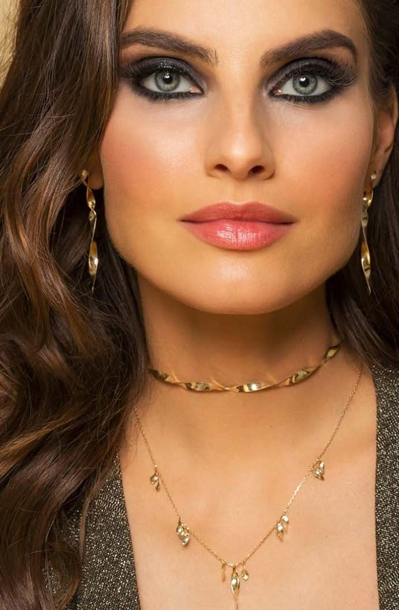
Client // CL JoiasQuem é a CL Joias e qual era o desafio?
O desafio
A CL Joias é uma joalheria originalmente brasileira que atua no mercado de fast fashion. Vinha passando por uma grande expansão física, abrindo diversas lojas pelo Brasil, mas o seu e-commerce já existente não performava bem. Havia uma grande carência de comunicação visual, considerando que joias fazem parte de um segmento de moda, onde o maior gatilho do cliente é visual e de impulsividade.
Qual foi o meu trabalho
Semelhante ao trabalho na Casas Pedro e na Unimarc, dei suporte consultivo para o time de Design com o meu conhecimento de análise heurística voltado para e-commerce.
Competências
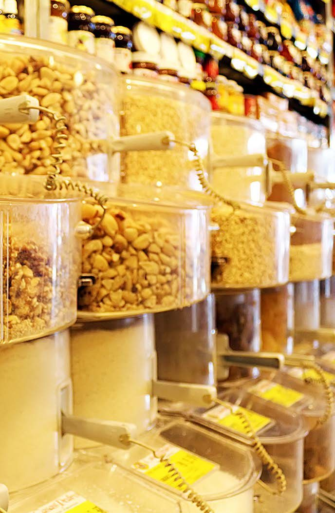
Client // Casas PedroQuem é a Casas Pedro e qual era o desafio?
O desafio
A Casas Pedro surgiu no centro do Rio de Janeiro há mais de 80 anos e se consolidou para todos os cariocas como o principal fornecedor de especiarias árabes. Através de uma consultoria de negócios, a Casas Pedro mudou completamente a sua pegada física, abrindo mais de 20 lojas em um ano. Nesse projeto, trabalhamos o seu posicionamento digital e desenvolvemos um e-commerce na plataforma VTEX para diversificar seus canais de atuação.
Qual foi o meu trabalho
Nesse projeto e em mais dois, testei o entendimento de um novo modelo de equipe: múltiplas equipes de UX + UI designer e um UX Research trabalhando por fora, dando suporte em análises pontuais e tomada de decisões.
Competências
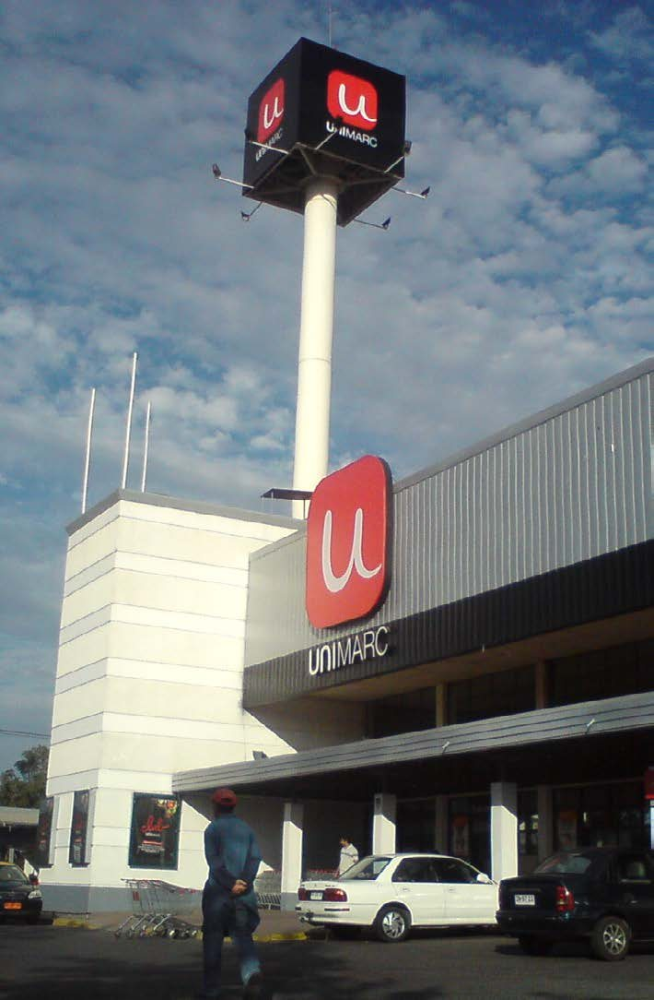
Client // UnimarcQuem é a Unimarc e qual era o desafio?
O desafio
A Unimarc é um desafio: imagine a maior rede de supermercados do Chile. No último trimestre de 2018 eles procuraram a VTEX pedindo uma plataforma de e-commerce nova e robusta. Sabiam que era urgente se posicionar melhor na internet para competir com a JUMBO, a principal concorrente.
Havia uma lacuna: a VTEX só oferecia soluções de TI, sem expertise de UX e UI. A forma que encontraram de resolver isso foi buscar um parceiro flexível e forte — chamaram a People Interactive para essa parceria, para que pudéssemos pesquisar e desenvolver o que fosse necessário para atender às particularidades do público chileno.
Qual foi o meu trabalho
Suporte consultivo para os times de UX e UI com o meu conhecimento de análise heurística, adquirido em mais de 1500 horas de estudo no Baymard Institute.